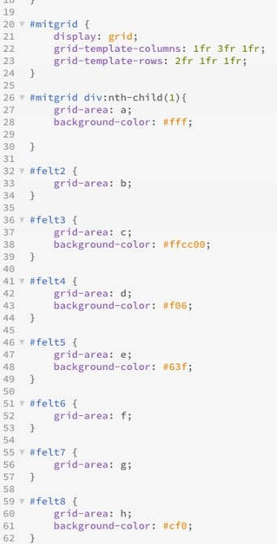
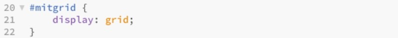
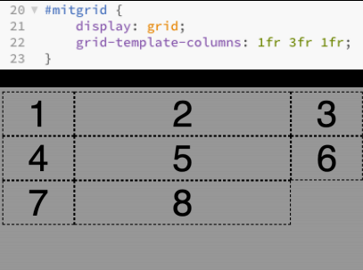
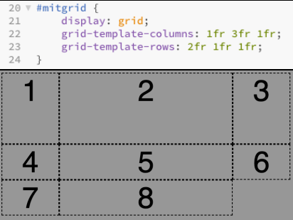
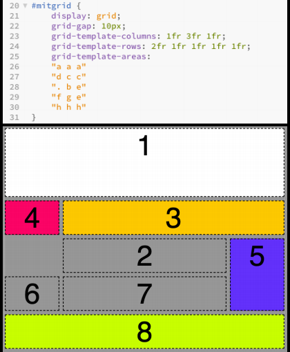
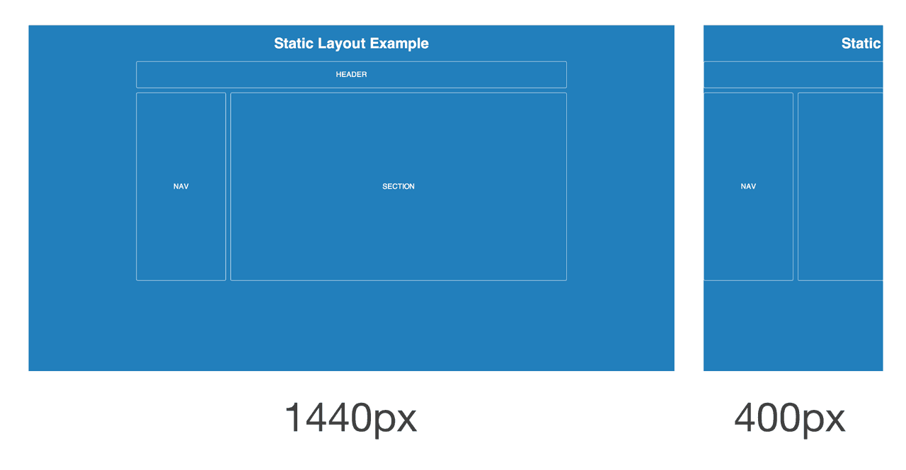
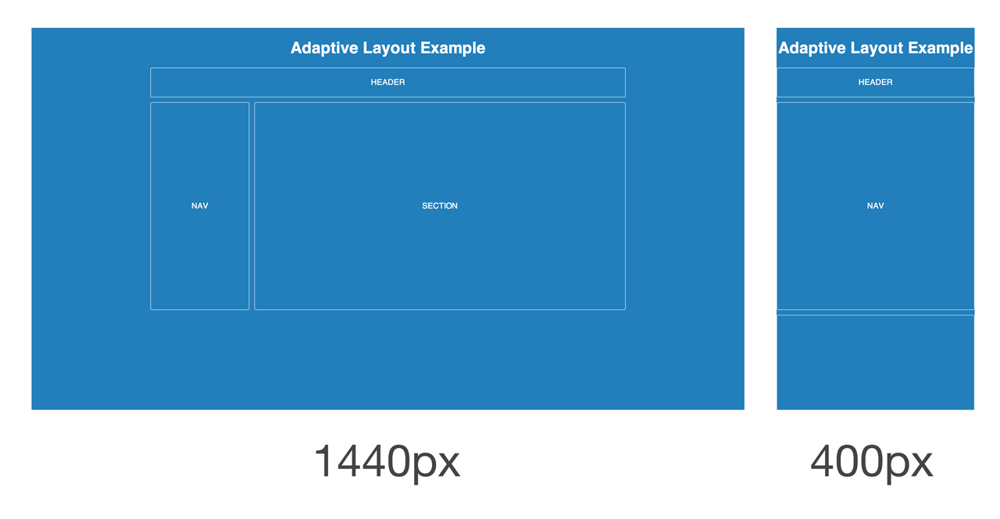
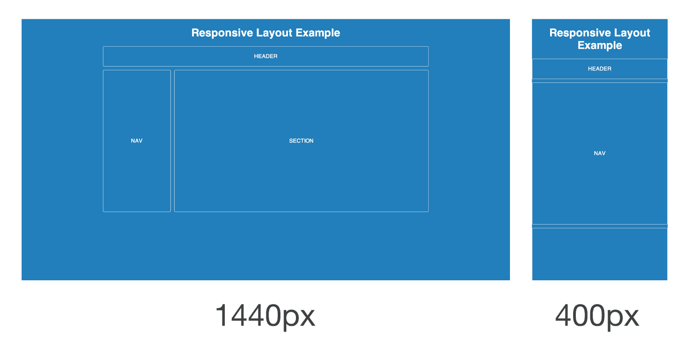
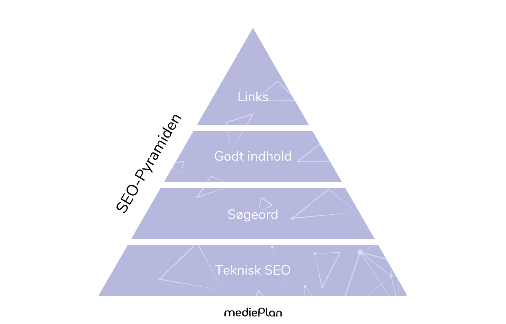

Webudvikling
Introduktion
Som multimediedesigner er det vigtigt at beskæftige sig med webudvikling. Hvordan laver man et website? Hvad er god webudvikling? Hvordan blev websites overhovedet til? Disse emner bliver udforsket på denne side om den mere hands-on proces af webudvikling.
Kode
Et af de mest væsentlige dele af webudvikling er kode. Det er her websitet bliver levende.
HTML
HyperText Markup Language (bedre kendt som HTML) er det kodesprog, som benyttes under udviklingen af en hjemmeside. HTML er et stort sprog og indeholder mange tags, som alle har hver deres funktion og formål for websitet. Der findes tags til tekst, billeder, video, links og meget mere.
Hvordan skriver man HTML?
HTML er skrives ved hjælp af en række elementer. Disse elementer er opbygget af tags som bestemmer alt fra tekst til billeder. Tags er opbygget af attributter og værdier - de skaber en formatering af tagget eller en egenskab. Til slut indeholder elementer også det indhold som så faktisk bliver påvirket.
HTML elementer er derfor en sandwich af kode, som billedet under også illustrerer. Når man har skrevet en række kode, skal filen gemmes med .html.

CSS
CSS står for Cascading Style Sheets og er det kodesprog som definerer udseendet for HTML-koden. HTML kan styles en anelse i sig selv, men CSS er langt mere udbredt. CSS har gjort det muligt at adskille struktur og udseendet i hver deres dokumenter. Det er brugbart for overskuelighedens skyld og kaldes External CSS, selvom det stadig er muligt at samle HTML og CSS i samme dokument med Internal og Inline CSS.
Et stylesheet er derved en samling af styles, eller rules, som bestemmer udseendet for elementer refereret fra HTML.

Hvordan skriver man CSS?
For at skrive CSS, må man starte med en selector, som fortæller hvad der skal laves rules (regler) om. Her er de primære selectors:
Element- bestemmer alle elementer, såsom p, h1, body. Det kunne fx være h1, hvor der så ville dannes et samlet set rules for alle h1erne, så de ville blive ens.
#id - Bruges når det er et specifikt element man vil style. Fx #underskrift, for kun at style det unikke element fremfor andre.
.class - Bestemmer rules for elementer med class. Det kunne eksempel være .quote, hvis man ønsker at have flere citater med ens udseende.
Pseudo selektorer - Bestemmer noget inden for en bestemt hændelse i et element eller lign. Fx a:hover, som angiver hvad der skal ske når en cursor går over et link.
Derefter skal man vælge en deklaration, som specificerer hvilken rule der skal laves. Deklarationen startes med en krølle { og sluttes med den tilsvarende slut-krølle }. En deklaration består af egenskaber og værdier adskilt af et kolon, hvor egenskaben afsluttes med et semikolon. Når et stylesheet skal gemmes, skal det gemmes som en css-fil ved at skrive .css. Et eksempel på en CSS-sætning ses herunder:

Kaskaderegler
Hvad nu hvis reglerne overlapper? Hvis flere CSS-regler forsøger at bestemme over det samme element, er det nødt til at vælge én bestemt regel at følge. Der findes nemlig et sæt regler, som definerer ranken af, hvornår hvilken regel skal bruges:
Specificity- Jo mere specifik jo bedre. Her gælder #id især.
Source order - Her gælder de først skrevne regler over de sidst skrevne, men Specificity har stadig højere rank.
!important - Dette ignorer alle regler.
Box model
I virkeligheden er alle HTML elementer omringet af en box, når man vil ændre dem med CSS. Boxen ses herunder:

Denne box består egenskaber kaldet margin, border, padding og content. De betyder:
Margin - margen, afstand mellem ramme og tilstødende elementer.
Border - en ramme, som man selv kan vælge om, skal være synlig eller ej.
Padding - afstand mellem indhold og ramme.
Content - indholdet, såsom tekst eller billeder.
Kodeskik
Hvis ikke man vil blive frustreret over sin egen kode (eller andres kode) bør man tage kodeskik til sig. Kodeskik handler om at holde overblik og orden i HTML- og CSS-koder for sit egen synspunkt, men også for andres. Den overskuelig kode skabes især ved at lave indryk med tab-knappen på tastaturet, så der kommer luft omkring de mange forskellige koder. Det gør det lettere at skabe sig et hurtigt overblik.
Dertil kan man benytte sig at kommentarer, for forståelses skyld. Det kan eksempelvis bruges til at forklare ”Her starter koden af menuen” eller ”Denne paragraph handler om …”. Kommentarer i HTML skrives med <! -- og sluttes med --> og i CSS med /* og sluttes med */. Disse kommentarer vil kun være synlige i koden og ikke på selve hjemmesiden.
Grid
Grid er de nyeste specifikation i CSS. I mange år har man måtte bruge float og flexbox for at manøvrere sine elementer rundt, men nu er det blevet meget lettere. Med grid kan man stille sine elementer op i et gitter (grid-area) hvor det er rækker og kolonner som gælder.
Grid step by step
Step 1: Named areas - Elementer kan navngives med “grid-area”. Bør være sigende navne, så man ikke selv bliver forvirret.
Step 2: Et grid oprettes ved at definere en container-element som “grid”, men det påvirker ikke layoutet endnu.
Step 3: Man angiver kolonner med “gridtemplate-columns” og bruger enheden “fr” (fractions). Hvis antallet af elementer ikke går op, startes en ny række automatisk.
Step 4: Man angiver højder med “grid-template-rows”
Step 5: I grid-containeren tilføjes “grid-template-areas”. Her indsættes navnene på vores grid-areas. Der angives en række per linje og hver linje angives et element pr. kolonne. Hvis et element spænder over flere kolonner, skal det gentages. Man kan også vælge at lade et felt stå tomt – enten med et punktum eller ved at skrive ”grid-gap”.
Responsive Design
De digitale medier er efterhånden blevet så inkorporeret i vores hverdag, at det ikke længere er nok ”blot” at have et webdesign egnet til desktop. I dag går alle rundt med mobiler og tablet ved hånden, hvor webdesignet til desktop ikke passer ind i disse mindre skærmstørrelser. Derfor er det nu en væsentlig del af webudviklingen, at sørge for et responsive design så brugerne får de mest optimale og brugervenlige oplevelser, uanset hvilken enhed de har. Derfor findes der nu fire overordnede tilgange til et webdesign:

Static - Statisk, layoutet er baseret på faste mål og bliver ikke ændret i de forskellige skærmstørrelser. Indhold ender ofte med at blive skåret af, så det ses som en stor fy-fy for brugervenligheden.

Fluid - Flydende, indholdet tilpasser sig bredden hvis elementer er angivet i procent. Indholdet vil ofte blive smalt og presset sammen, så det er derfor ikke særligt æstetisk-pleasing.
Adaptive - Adaptiv, meget som navnet siger adapterer den sig til et allerede eksisterende desktopdesign, dermed mobile last. Derfor en mellemting mellem statisk og responsive layout. Styres af @mediaqueries.

Responsive - Responsivt design, det mest optimale layout at benytte hvis man starter fra bunden af. Der burde man tænkte i mobile first, da det er lettest at designe noget til en lille skærm og derefter gøre det større, i modsætning til det modsatte scenarie, som er langt mere besværligt. Styres også af @mediaqueries.

Server-side Scripting
Server-side er de programmer der afvikles på serveren, som danner websidens server. Afvikles de hos klienten er det i stedet client-side.
PHP
”PHP Hypertext Preprocessor” er blot et af de betydninger PHP har. PHP i sig selv er et server-side programmeringssprog som bruges til at lave dynamiske websites. Sproget blev oprindeligt skrevet af danskeren Rasmus Lerdorf i 1995 og låner fra Pearl, Java og C.
PHP kan en lang række ting, som bl.a. at se aktuel information, fx tidspunkt, og er i stand til at indsætte stumper af kode, kaldet include, som vil være fokusområdet her. PHP skal embeddes i en almindelig HTML-fil og derefter omdøbes til .php, så serveren ved at den skal behandles inden den kommer videre til browseren.
Include
Include er en feature som gør det muligt at indsætte små dele af kode, ind i en anden kode. Dette kan bl.a. være for overskueligheden skyld – hvis man fx har en website med 20 sider, skulle man med HTML ind og rette enhver menu på de 20 sider, hvor man med include derimod kan ”fjerne” bidden med menuen og sætte den ind i sit eget dokument og derved include det dokument, i alle de originale 20 sider. Så hvis man vil have 21 sider, skal man blot tilføje den på det ene dokument med menuerne. Dette gøres ved i en .php fil, hvor der i dokumentet indsættes et <?PHP tag, som slutter med ?>. Dette sætter serveren sammen inden det når browseren.
Boostrap
Bootstrap er et open-source platform for programmering og kode af web med HTML, CSS og JavaScript. På Bootstrap kan man få templates af kode til fx knapper, forms, typografi, navigation mm. Bootstrap er mobile-first og kan bruges til at skabe en website for bunden, eller optimere en eksisterende hjemmeside.
SEO
SEO betyder Search Engine Optimization og betegner emnet søgemaskineoptimering. Det er en metode webudviklere benytter for at komme øverst op i de millioner af resultater på søgemaskiner som Google. Det handler altså om at optimere hjemmesiden og indholdet, for at opnå de bedste resultater og fleste klik på sin hjemmeside.
SEO-pyramiden
For netop at opnå denne SEO-optimering er der 4 emner, som bør indgå i strategien. De fire emner er teknik, søgeadfærd, indhold og links, som også ses på pyramiden illustreret her:

Teknik - Handler om at få maskinen til at forstå din kode eksempelvis med semantiske tags (Læs mere om semantiske tags længere nede)
Søgeadfærd - Kend målgruppen og de bedste keywords
Indhold - Siger næsten sig selv, det handler om selve teksten, billederne osv. på siden.
Links - Handler om popularitet, hvor andre sider linker til din.
Semantiske tags
Semantiske tags er tags som fortæller noget om selve betydningen og indholdet bag tagget, så det kan forståes både af maskine og mennesker. Når Google skal undersøge en hjemmeside, bliver det nemlig ikke gjort af et menneske som kan læse og fortolke, men af en maskine. Hvis man ikke bruger semantiske tags, kan en maskine ikke indse hvilket indhold der lægger bag tagget.
Eksempler på ikke-semantiske elementer:
div & span - Fortæller intet om dets indhold.
Eksempler på semantiske elementer:
section & h1 - Definerer klart indholdet.
Server
Begrebet server indebærer både hardware med en særlig rolle, og software med en særlig rolle.
En server bruges ved hjælp af en klient, som kobler sig til serveren, og kommunikerer information med denne. En webserver kommunikerer med en web-klient, bedre kendt som en browser. En FTP-server kommunikerer med en FTP-klient, fx et FTP-program eller dreamweaver. En printserver kommunikerer med en printklient.
Website
Et website er placeret på en server. Serveren selv kan være placeret i et datacenter, på sit skrivebord eller noget helt andet. Web-serveren leverer HTML, CSS, JavaScript og billeder til browseren og har en IP-adresse. Denne IP-adresse kan have et domæne, såsom www.minhjemmeside.dk, som man vil kunne bruge i browseren.
Versionsstying
Versionsstyring går ud på at gemme sin gode på en sikker og pålidelig måde. En sikker måde kan være at have kontrol over navngivning af filer, overblik over mapper eller forklarende noter af opdateringer. Når man koder kan enten sidde og gemme i den samme fil, eller gemme i en million filer. At gemme i den samme fil gør det umuligt at gå tilbage hvis der sker fejl, imens en masse forskellige filer hurtigt bliver uoverskueligt at have overblik over. Et redskab i versionsstrying vil gøre det muligt at undgå fejl, have kontrol over flere delprojekter og versioner og især samarbejde med andre om samme projekt.
Github
GitHub er en webplatform, hvor det er muligt at oprette Git-repositories lagret i skyen. På Githubs egen hjemmeside kan man se projekter og koder, sat op i versionsstyring. Github kommer med en lang række begreber:
Repository - Repo, samlingen af filer, en projektmappe
Branch - En gren, en parallel version i et repo, men berører ikke master
Master Branch - Hovedforløbet, den gældende kode
Commit - En revision, som at gemme
Pull Request - Rettelser, et forslag til en ny udgave
Diff – Difference, en forskel mellem to commits
Merge - Når ændringer i en branch samles med en anden
Pull – Når en ændring hentes og bliver merged
Internettes historie
Hovedsageligt er internettet et netværk af servere og computere. For at computerne og serverne kunne kommunikere data til hinanden opfandt man et regelsæt, som skulle være standarden for hvordan computerne skulle tale sammen. Dette regelsæt kaldes også for en protokol eller rettere Transmission Control Protocol (TCP). Herfra kunne forskellige computere forbindes.
"The Web does not just connect machines, it connects people."
World Wide Web
World Wide Web (eller WWW som vi kender det) blev opfundet af Tim Berners-Lee i 1989, da han arbejdede på CERN i Schweiz. Her ville Berners-Lee opdage en måde at dele data på, ved at linke Hypertext dokumenter mellem hinanden, ved hjælp af internettet.
Hele idéen med World Wide Web var at skabe en vidensdatabase eller lexicon, hvor alle interesser eller associationer kunne finde sted. Det var drømmen om de store og brede servere – søgemaskiner og websites. World Wide Web åbnede internettet op for verdenen og ikke længere udelukkende for forskere. Derfra kunne alle nu lettere kommunikere og dele informationer med hinanden.
Kilder
• Niels Østergaard - Internettets historie + serverbegrebet
• Niels Østergaard - Introduktion til CSS
• Niels Østergaard - Introduktion til HTML
• Niels Østergaard - Introduktion til Serverside Scripting
• Niels Østergaard - Responsive Design + CSS Grid
• Niels Østergaard – Versionsstyring
• Seo.dk, "Hvad er SEO", besøgt den 20 december 2019 - https://www.seo.dk/hvad-er-seo/#hvad-betyder-seo
• Stofa, "30 år med internet" (27. august 2019), besøgt den. 20 december 2019 - https://stofa.dk/erhverv/blog/30-aar-med-internet
• World Wide Web foundation, Tim Berners-Lee (14. september 2009), besøgt den. 20 december 2019 - https://webfoundation.org/about/community/knight-2008-tbl-speech/
Reflektion
Inden jeg begyndte på uddannelsen, havde webudvikling været den del, som havde tiltalt mig mest. Med en lille bitte baggrund inden for HTML og CSS havde jeg forventninger om at det var noget jeg ville juble over – og jeg må sige at mine forventninger ikke har været forgæves.
Teorien og det praktiske i at kode og forstå en hjemmeside har jeg fundet sjovt, men især også vanskeligt. Dog vanskeligt på en god måde. Jeg har på intet tidspunkt i semesteret følt et overlegent overskud, men hellere konstant følt mig udfordret på en eller anden front med webudvikling. Jeg har klart fundet nogle svagere sider sammen med de stærkere. Jeg føler mig godt klædt på for mere nysgerrighed om HTML og CSS, imens de lidt mere tekniske server-begreber, ikke nær så let har fundet sig en plads inde på min personlige harddisk. Men det er ikke nok til at slå mig ud!